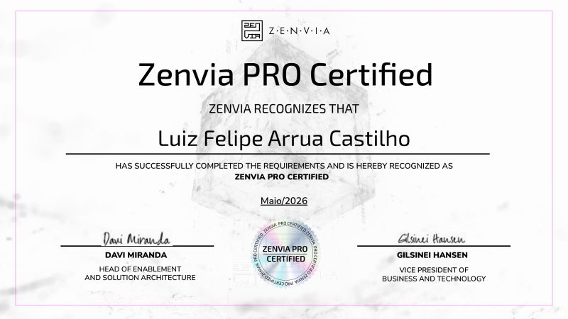

Analytics e BI
Dashboards, cruzamento de bases, indicadores operacionais e apoio a tomada de decisao.
 Arrua
Arrua
Data Analytics + BI + Automacao + Integracoes
Programador Pleno com base forte em suporte tecnico, dados e APIs
Curitiba - Parana - Brasil
Profissional com experiencia em suporte tecnico, gestao de inventarios, automacao de processos e analise de dados. Direciono minha carreira para Data Analytics e Business Intelligence, combinando visao tecnica, curiosidade e capacidade de resolver problemas com eficiencia.
Na pratica, uno Python, SQL/MySQL, Power BI, Excel avancado, APIs REST, JSON, webhooks e analise de logs para transformar operacoes manuais em fluxos mais claros, rastreaveis e uteis para o negocio.
Dashboards, cruzamento de bases, indicadores operacionais e apoio a tomada de decisao.
Consumo de sistemas externos, webhooks, validacao com Postman, JSON e troubleshooting.
Rotinas em Python, Google Apps Script e organizacao de processos que reduzem trabalho manual.
Base solida em atendimento tecnico, incidentes criticos, documentacao e relacionamento com cliente.

Certificacao
Reconhecimento Zenvia PRO Certified emitido em maio/2026, reforcando minha atuacao com solucoes conversacionais, integracoes e automacao de fluxos.
Desenvolvimento de solucoes conversacionais e integracoes via APIs REST e webhooks, com foco em chatbots, automacao de fluxos e consumo de sistemas externos.
Responsavel tecnico pela area de Suporte/Helpdesk, lideranca de equipe, atendimento corporativo e estabilidade dos ambientes de TI.
Base em suporte N1, atendimento critico e operacao de alto volume, evoluindo para frentes de maior complexidade como Movel Critico, Cluster e Vivo V.
Headline equilibrada
Programador | Integracoes & APIs - Automacao - Analise de Dados & BI | Python, SQL, Power BI, JavaScript
Headline com foco em dados
Analise de Dados & BI | Python, SQL, Power BI | Background em Integracoes, APIs e Automacao de Processos
Headline atual refinada
Programador PL | Chatbots & Automacao Conversacional | Integracoes via API | JavaScript, JSON & Python para Dados
Profissional em transicao para Data Analytics e Business Intelligence, com base solida em automacao de processos e suporte tecnico. Desenvolvo automacoes em Python, dashboards em Power BI e Looker Studio, e manipulo bases em SQL/MySQL. Tenho projeto proprio de Machine Learning com Python, Scikit-Learn e Pandas. Cursando Estatistica e Ciencia de Dados (UFPR) e ADS (PUCPR).
Programador com atuacao em integracoes via API, automacao de fluxos e desenvolvimento back-end. Trabalho profissionalmente com JavaScript, JSON, APIs REST, Webhooks e Postman, desenvolvendo chatbots e conectando sistemas com foco em eficiencia. Tenho projetos proprios em Python, Vue.js e Kotlin, e estudo Java e TypeScript. Cursando Analise e Desenvolvimento de Sistemas (PUCPR).
Profissional com experiencia em suporte tecnico, automacao de processos e analise de dados, hoje direcionando a carreira para Data Analytics e BI. Desenvolvo automacoes em Python, dashboards em Power BI e consultas em SQL/MySQL, alem de atuar com integracoes via APIs REST e JSON. Cursando Estatistica e Ciencia de Dados (UFPR) e ADS (PUCPR).
Exploracao de dados, selecao de atributos e treinamento de modelos de machine learning.
Ver repositorioAplicacao frontend dinamica com foco em usabilidade, organizacao visual e performance.
Ver repositorioProjeto mobile para leitura de notificacoes Android e experimentacao com automacao pessoal.
Ver repositorioAutomacao relacionada a finanças pessoais, organizacao de rotina e integracoes financeiras.
Ver repositorioExperimentos e estrutura de estudo relacionados a Open Finance e consumo de APIs.
Ver repositorioSite pessoal em HTML, CSS e JavaScript com dashboard, curriculo e evolucao para area privada.
Ver repositorio